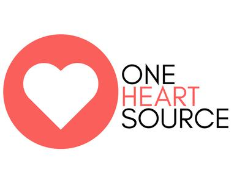

One Heart Source (OHS)
OHS


One Heart Source (OHS) is an entrepreneurial non-profit organization
that designs and catalyzes education programs that empower vulnerable
people and communities with choice and opportunity.
The organization’s model of international mentorship connects
university students, professionals, families, and retirees
to vulnerable youth and communities across cultural, social,
and economic boundaries.
With its partner communities in Jamaica,
South Africa, and Tanzania, the OHS International Collective
provides holistic care and academic excellence
as a means of ending the vicious cycle of generational poverty.